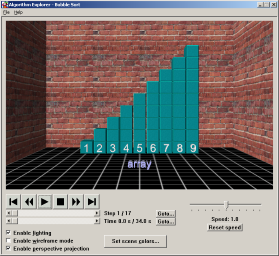

The following describes publications on computer science education by
Ian Parberry.
See also publications on game programming education.
My coauthors in this work include my colleague
Mike Fellows, of MegaMath fame. Regrettably, we didn't get to work together as much as I
would have liked. Bill Gasarch and I collaborated on the Second Edition of Problems on Algorithms
below.

Erik Carson, Ian Parberry,
and Bradley Jensen, "Algorithm Explorer: Visualizing Algorithms in a 3D Multimedia
Environment" Proceedings of the 2007 ACM Technical Symposium on Computer Science
Education, pp. 155-159, March 2007.
[pdf,
BibTeX]
Abstract
Computer science courses have increasingly made use of visualization tools to illustrate common algorithms.
This paper describes Algorithm Explorer, an educational tool designed for use by instructors and students
to examine algorithms in a rich environment composed of 3D data representations,
3D audio cues, and easy-to-use controls. Instructors and students can easily add calls to Algorithm Explorer's
C++ API to their programs to quickly develop engaging visualizations, and every detail of the scene can
be customized as the developer desires.
I. Parberry,
Lecture Notes on Algorithm Analysis and Complexity Theory, Fourth Edition, 2001.
[pdf]
From the Preface
These lecture notes are almost exact copies of the overhead projector transparencies that I use in my CSCI
4450 course (Algorithm Analysis and Complexity Theory) at the University of North Texas. The material
comes from
-
textbooks on algorithm design and analysis,
-
textbooks on other subjects,
-
research monographs,
-
papers in research journals and conferences, and
-
my own knowledge and experience.
Be forewarned, this is not a textbook, and is not designed to be read like a textbook. To get the best use
out of it you must attend my lectures.
Students entering this course are expected to be able to program in some procedural programming language
such as C or C++, and to be able to deal with discrete mathematics. Some familiarity with basic data
structures and algorithm analysis techniques is also assumed. For those students who are a little rusty, I
have included some basic material on discrete mathematics and data structures, mainly at the start of the
course, partially scattered throughout.
Why did I take the time to prepare these lecture notes? I have been teaching this course (or courses very
much like it) at the undergraduate and graduate level since 1985. Every time I teach it I take the time to
improve my notes and add new material. In Spring Semester 1992 I decided that it was time to start doing
this electronically rather than, as I had done up until then, using handwritten and xerox copied notes that
I transcribed onto the chalkboard during class.

I. Parberry,
Problems on Algorithms, Prentice Hall, 1995.
Second Edition, with William Gasarch, 2002.
[pdf]
From the Preface
The ability to devise effective and efficient algorithms in new situations
is a skill that separates the master programmer from the merely adequate coder.
The best way to develop that skill is to solve problems.
To be effective problem solvers, master-programmers-in-training must
do more than memorize a collection of standard techniques and applications
- they must in addition be able to internalize and integrate what they have
learned and apply it in new circumstances.
This book is a collection of problems on the design, analysis,
and verification of algorithms for use
by practicing programmers who wish to hone and expand their skills,
as a supplementary text for students enrolled in an
undergraduate or beginning graduate class on algorithms, and
as a self-study text
for graduate students who are preparing for the qualifying (often
called "breadth" or "comprehensive") examination on algorithms for
a Ph.D. program in Computer Science or Computer Engineering.
It is intended to augment the problem sets
found in any standard algorithms textbook.
M. R. Fellows and
I. Parberry,
"SIGACT Trying to Get Children Excited About CS", Computing Research News, Vol. 5, No. 1, p. 7, Jan. 1993.
[pdf]
From the Preamble
As an emerging discipline, computer
science has a serious communication
problem. The public generally is
ignorant of what computer science is
and what computer scientists do. They
tend to hear the word "computer" and
assume that we are some kind of
technicians. Is it any wonder then that
computer science is represented in
many schools by either computer games
or some antiquated approach to
programming, which at worst concentrates on a litany of syntax and at best
emphasizes expediency over effectiveness and efficiency?
But computer science
is not about computers - it is
about computation.
Author's Comments
There's a quote in this article that is often attributed to Edsger Dijkstra.
"Computer Science is no more about computers than astronomy
is about telescopes"
It appears twice in our article (see the pdf
and the images below), once in the running text, and once in a breakout box with
"Computer science" abbreviated to "CS".
My coauthor Mike Fellows made a similar statement on p.2 of
a 1991 paper (the italics are his):
"Computer science is not about machines, in the same way that astronomy is not
about telescopes"
Dijkstra visited the University of Victoria in 1991 or 1992
(Mike's memory is unclear on the exact year),
where Mike enthused to him about the MegaMath project
over dinner. According to Mike, the quote in question was a rallying cry in that period.
Mike is responsible for writing
"Computer science is no more about computers than astronomy is about telescopes" in the draft
of our 1993 article. I added the afterthought "...biology is about microscopes
or chemistry is about beakers and test tubes."
Consulting the extensive
archive of Dijkstra's manuscripts at UT Austin,
Dijkstra's use of the quote appears to be from a
video made in Fall 2000
for Dutch television, broadcast in April 2001.
His quote appears at about 1:33 into the video, screenshots of which are given below.
I believe that Dijkstra's quote should be attributed to Mike Fellows, since it
is fairly clear that Dijkstra heard
it from him. Although the earliest appearance
in print appears to be in our 1993 article, in my opinion Mike deserves sole attribution.
He made up the part that is quoted so widely.
I simply tacked on a bit at the
end that nobody bothers to quote.
Here it is again, correctly attributed for posterity.
"Computer Science is no more about computers than astronomy
is about telescopes."
Michael R. Fellows
Here is the attribution for the complete quote:
"Computer Science is no more about computers than astronomy
is about telescopes, biology is about microscopes
or chemistry is about beakers and test tubes."
Michael R. Fellows and Ian Parberry
Computing Research News, 5(1):7, 1993